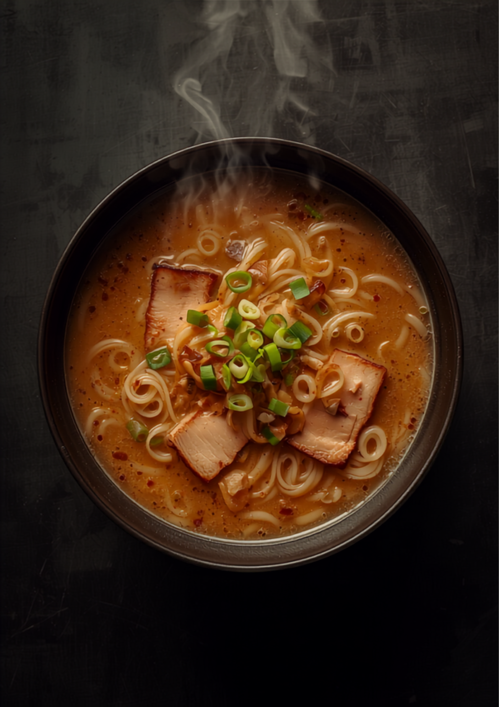
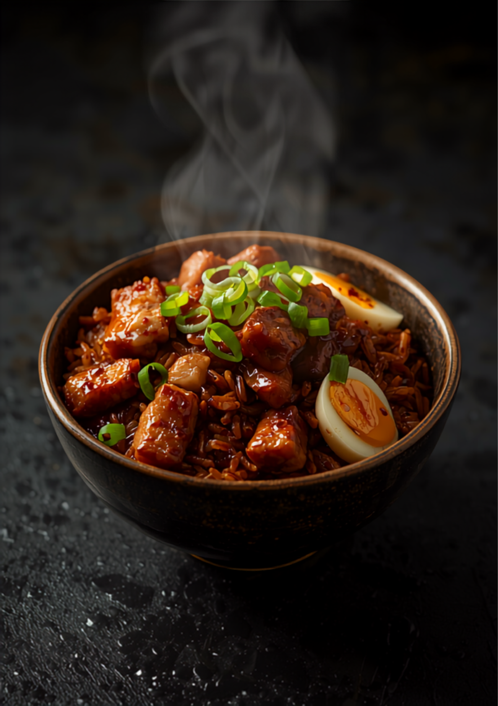

豚骨100%。素材が砂状になるまで、骨の髄液まで煮込んだ「ド豚骨」。福岡市西区、行列でも回転の早い、おやじの店。

PORK BONE 100%豚骨100%を、長時間ひたすら炊き上げる。ここから全てが始まる。
骨が砂状になるまで。骨髄液まで、余さずスープへ溶かし込む。
絶やさず継ぎ足し、濃度を保つ。芳しい豚骨の香りは、店の前から。

「サイドメニューが強いラーメン屋は、息が長い」。味濃いめのチャーハンは、ド豚骨と並ぶ実力。
これぞ「ド豚骨」といった濃厚なスープ。骨髄液まで煮込んでスープを作ってるらしい。ストレート細麺との相性もバッチリ。肉厚チャーシューも絶品です。
店前に着いた時から芳しいこの豚骨の匂いは間違いない、と。結果大当たり。嬉しかったのがチャーハンがちゃんと美味い！サイドが強いラーメン屋は息が長い。
ちょっと熱めの麺でしたが替え玉まで60秒ちょっと。無料の辛子高菜とにんにくで味変して2回目の替え玉。人気店だけど回転率が早いので、待ちも苦じゃない。西区で5本の指に入る最高のお店。